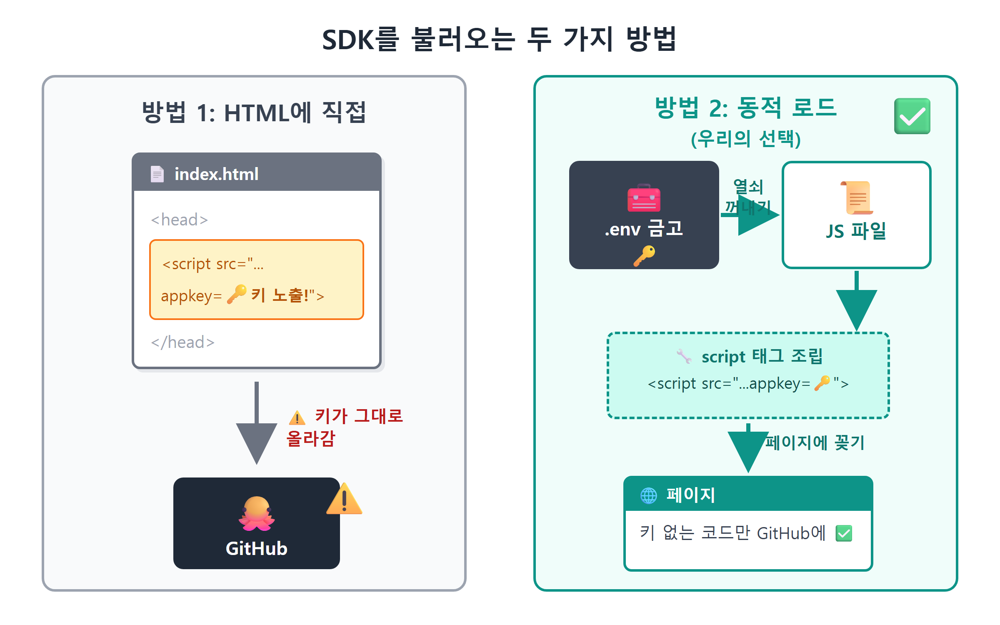
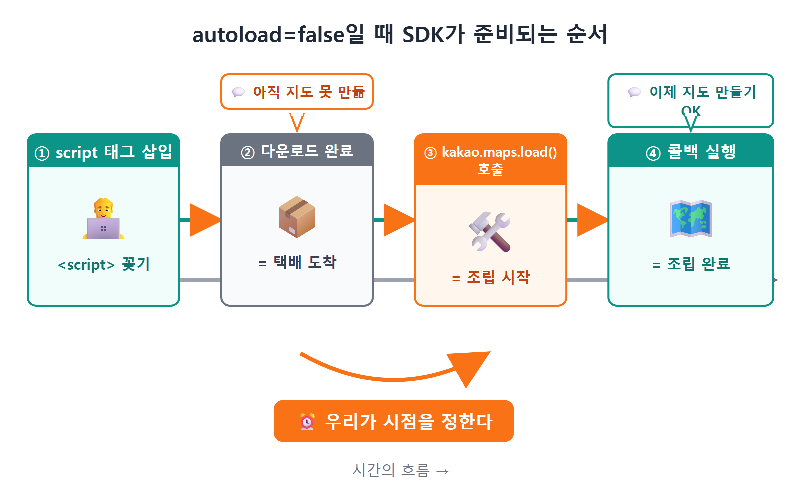
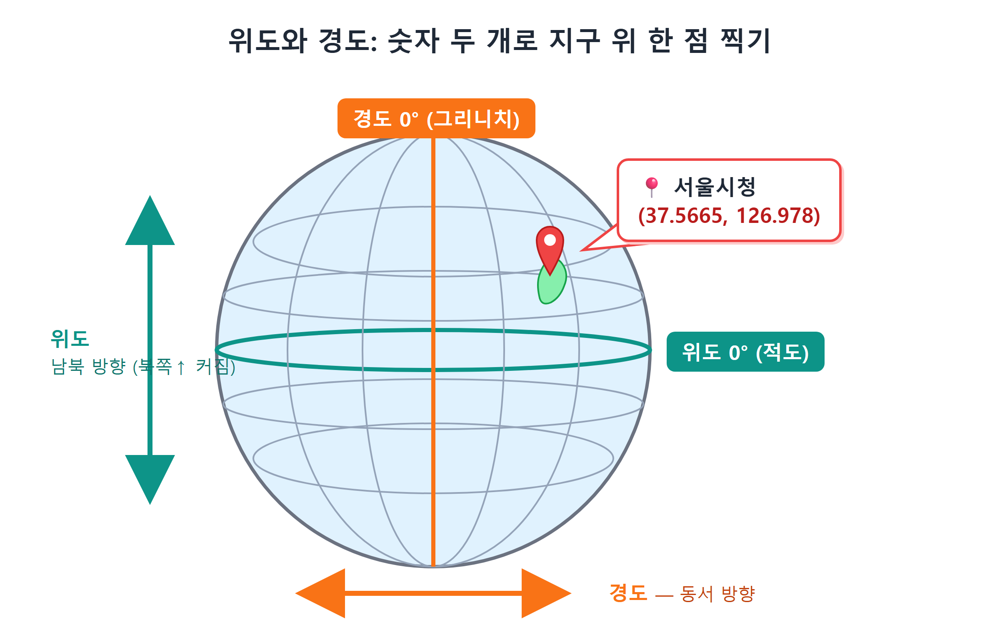
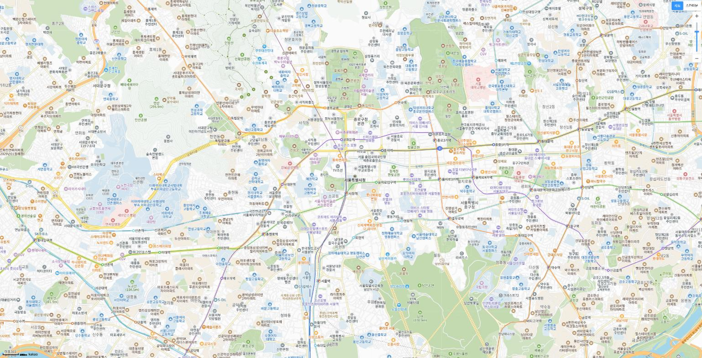
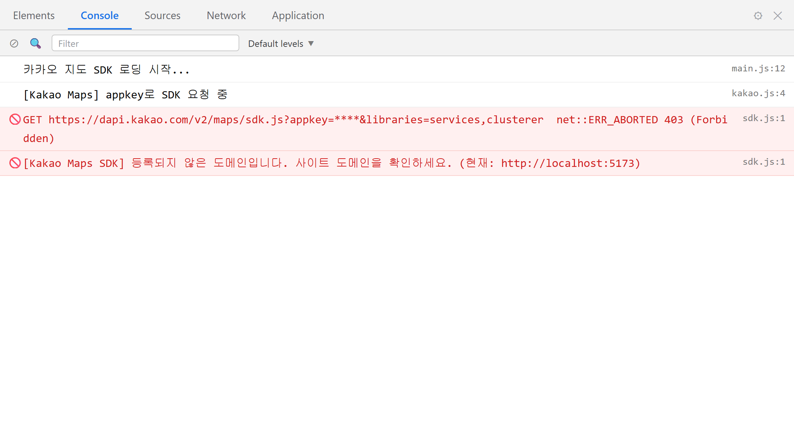

9장 첫 지도 띄우기¶
이 장에서 배우는 것
script태그로 외부 SDK를 불러오는 원리와, 동적 로드가 필요한 이유를 이해합니다autoload=false와kakao.maps.load()가 왜 필요한지 배웁니다- Claude Code에게 시켜 SDK 로더 모듈(
loader.js)을 만들고 함께 읽습니다 - 지도 생성 3요소(컨테이너 · center · level)와 위경도(LatLng) 개념을 배웁니다
- 회색 화면, 401/403 오류 같은 첫 지도의 단골 사고를 스스로 해결합니다
드디어 이 순간입니다. 7장에서 열쇠(JavaScript 키)를 발급받았고, 8장에서 집터(Vite 프로젝트)를 닦고 열쇠를 .env에 숨겨 두었습니다. 이번 장이 끝나면 브라우저 화면 가득 진짜 카카오지도가 뜹니다. 마우스로 끌면 서울에서 부산까지 움직이고, 휠을 굴리면 골목길까지 확대되는, 카카오맵 앱에서 보던 그 지도가 여러분의 웹페이지 안에서 돌아갑니다.
책 전체를 통틀어 "와!" 소리가 처음 나오는 장이기도 합니다. 지금까지는 설치하고 가입하고 설정하는, 솔직히 조금 지루한 준비의 연속이었죠. 오늘부터는 만듭니다. 그리고 이 책의 방식대로, 코드는 Claude Code가 짜고 우리는 시키고, 읽고, 확인합니다. 복사-붙여넣기가 없습니다. 대신 "왜 이렇게 짰는지"를 함께 뜯어봅니다. 이번 장의 코드는 몇 줄 안 되지만, 그 몇 줄에 웹 개발의 굵직한 개념이 셋이나 들어 있습니다. 외부 스크립트 로드, 비동기 대기, 그리고 좌표계. 천천히 갑시다.
9.1 SDK — 카카오가 미리 만들어 둔 지도 부품 상자¶
지도를 밑바닥부터 만든다고 상상해 보세요. 전 세계 도로 데이터를 구하고, 확대 단계마다 타일 이미지를 준비하고, 마우스 드래그를 계산하고... 대기업 팀이 몇 년을 매달리는 일입니다. 다행히 우리는 그럴 필요가 없습니다. 카카오가 그 모든 것을 SDK1라는 이름의 자바스크립트 파일 하나에 담아 두었기 때문입니다.
카카오지도 JavaScript SDK는 한마디로 지도 부품 상자입니다. 이 파일을 우리 페이지에 불러오기만 하면, kakao.maps라는 이름 아래 지도 만들기(Map), 좌표 다루기(LatLng), 마커 찍기(Marker) 같은 완제품 부품이 우르르 쏟아집니다. 우리가 할 일은 부품을 조립하는 것뿐입니다.
그럼 이 파일을 어떻게 불러올까요? 웹페이지가 외부 자바스크립트를 불러오는 표준 방법은 HTML의 script 태그입니다. 카카오 공식 문서에도 처음에는 이런 방법이 나옵니다.
<!-- 방법 1: index.html에 직접 적기 (우리는 이 방법을 안 씁니다) -->
<script src="https://dapi.kakao.com/v2/maps/sdk.js?appkey=0123abcd4567efgh8901ijkl2345mnop"></script>
주소 뒤에 ?appkey=...가 붙어 있죠. 7장에서 배운 대로, 카카오 서버는 요청마다 열쇠를 확인합니다. script 태그로 SDK를 요청할 때 열쇠를 함께 내미는 방법이 바로 이 주소 뒤에 붙이는 물음표 뒷부분(쿼리 문자열이라고 부릅니다)입니다.
간단해 보이는데, 왜 우리는 이 방법을 안 쓸까요? 위 코드를 다시 보세요. 키가 HTML에 그대로 박혀 있습니다. 8장에서 우리는 키를 .env 파일에 숨기고, .gitignore로 GitHub에 올라가지 않게 막았습니다. 그런데 HTML에 키를 직접 적는 순간 그 노력이 물거품이 됩니다. index.html은 GitHub에 올라가는 파일이니까요.
"그럼 HTML에서도 .env를 읽으면 되잖아?" 좋은 생각이지만, 안타깝게도 순수한 HTML은 변수를 읽지 못합니다. import.meta.env.VITE_KAKAO_JS_KEY라는 마법은 자바스크립트 안에서만 통합니다.
그래서 방법 2, 동적 로드가 등장합니다. HTML에 script 태그를 미리 적어 두는 대신, 자바스크립트 코드가 실행되는 시점에 script 태그를 코드로 만들어서 페이지에 꽂아 넣는 방식입니다. 자바스크립트 안에서라면 .env의 키를 읽어 주소에 끼워 넣을 수 있죠. 정리하면 이렇습니다.
| 방법 1: HTML에 직접 | 방법 2: 동적 로드 (우리의 선택) | |
|---|---|---|
| 적는 곳 | index.html |
자바스크립트 파일 |
| 키 처리 | HTML에 그대로 노출 | .env에서 읽어서 끼움 |
| 코드 관리 | GitHub에 키가 올라감 | 키 없는 코드만 올라감 |

그림 9.1 — SDK를 불러오는 두 가지 방법
💡 팁
"동적(dynamic)"이라는 말이 나오면 "실행 중에, 그때그때"로 바꿔 읽으세요. 동적 로드는 "페이지가 실행되는 도중에 그때그때 스크립트를 불러온다"는 뜻입니다. 반대말 "정적(static)"은 "미리 정해져 있다"입니다.
9.2 autoload=false — 택배 도착과 조립 완료는 다르다¶
동적 로드에는 함정이 하나 숨어 있습니다. SDK 파일 다운로드가 끝났다고 해서 지도를 만들 준비까지 끝난 것은 아니라는 점입니다.
택배로 조립식 책장을 주문했다고 해 봅시다. 택배 상자가 현관에 도착했습니다(파일 다운로드 완료). 그 순간 바로 책을 꽂을 수 있나요? 아니죠. 상자를 뜯고 부품을 조립하는 시간이 따로 필요합니다. 카카오 SDK도 같습니다. 파일이 도착한 뒤 내부적으로 지도 모듈을 준비하는 초기화 작업이 한 박자 더 있습니다. 이 준비가 끝나기 전에 new kakao.maps.Map(...)으로 지도를 만들려 들면, "그런 건 아직 없는데요?"라는 에러가 납니다. 얄궂게도 이 에러는 날 때도 있고 안 날 때도 있습니다. 네트워크가 빠른 날엔 잘 되다가, 느린 날엔 갑자기 죽는 식이죠. 이런 "타이밍 운"에 기대는 코드가 가장 잡기 어려운 버그를 만듭니다.
카카오는 이 문제를 위한 공식 장치를 준비해 두었습니다. SDK 주소 뒤에 autoload=false 라는 옵션을 붙이는 것입니다. "파일이 도착해도 자동으로 조립하지 말고 기다려"라는 뜻입니다. 그 대신 우리가 원하는 시점에 kakao.maps.load(콜백)을 부르면, SDK가 조립을 시작하고 조립이 완전히 끝난 순간 우리가 넘긴 콜백 함수2를 실행해 줍니다. 순서를 그림으로 그리면 이렇습니다.

그림 9.2 — autoload=false일 때 SDK가 준비되는 순서
정리하면 우리의 로드 전략은 세 문장입니다. 자바스크립트로 script 태그를 만들어 꽂는다. 주소에는 .env에서 읽은 키와 autoload=false를 붙인다. 그리고 kakao.maps.load()의 콜백 안에서만 지도를 만든다. 이제 이 전략을 코드로 옮깁니다. 물론, 우리 손으로 치는 게 아니라요.
9.3 Claude Code에게 로더를 시키자¶
Claude Code를 열고(프로젝트 폴더에서 claude를 실행하는 것, 이제 익숙하시죠) 이렇게 시켜 봅시다. 4장에서 배운 프롬프트 4요소 — 맥락·목표·제약·출력 — 을 담았습니다.
🗣 이렇게 시키세요
카카오지도 JS SDK를 동적으로 불러오는 모듈을 src/loader.js로 만들어줘. 키는 .env의 VITE_KAKAO_JS_KEY에서 읽고, autoload=false로 받아서 kakao.maps.load()가 끝나면 resolve되는 Promise를 반환해줘. 키가 없거나 로드에 실패하면 이유를 알 수 있는 에러로 reject해줘.
잠시 후 Claude Code가 파일을 만들고 결과를 보여 줍니다. 이 장 시점의 src/loader.js 전문입니다. (이 파일은 앞으로 딱 두 번 더 자랍니다 — 검색을 만드는 15장에서 services, 마커를 묶는 22장에서 clusterer 라이브러리를 하나씩 추가해 최종형이 됩니다.)
// 카카오 지도 SDK를 동적으로 불러오는 모듈
// autoload=false로 받아서 kakao.maps.load() 콜백 안에서 지도를 만든다.
export function loadKakaoSdk() {
return new Promise((resolve, reject) => {
const key = import.meta.env.VITE_KAKAO_JS_KEY;
if (!key) {
reject(new Error('VITE_KAKAO_JS_KEY가 .env에 없습니다.'));
return;
}
const script = document.createElement('script');
script.src =
`https://dapi.kakao.com/v2/maps/sdk.js?appkey=${key}` +
`&autoload=false`;
script.onload = () => kakao.maps.load(() => resolve(kakao));
script.onerror = () => reject(new Error('카카오 SDK 로드 실패 — 키/도메인 확인'));
document.head.appendChild(script);
});
}
열여덟 줄. 짧지만 알찬 코드입니다. 위에서부터 함께 읽어 봅시다.
export function loadKakaoSdk() — 이 파일이 바깥 세상에 내놓는 함수는 딱 하나입니다. export를 붙였으니 다른 파일에서 import해서 쓸 수 있습니다. 이렇게 "SDK 불러오기"라는 한 가지 일만 하는 파일로 분리해 두면, 나중에 지도 코드가 아무리 커져도 로드 문제는 이 파일 하나만 보면 됩니다.
return new Promise((resolve, reject) => {...}) — Promise는 "지금은 안 끝났지만 언젠가 끝나면 알려줄게"라는 약속 증서입니다. SDK 다운로드는 네트워크를 타는 일이라 몇 밀리초가 걸릴지 아무도 모릅니다. 그래서 함수가 결과 대신 약속을 반환하고, 일이 잘 끝나면 resolve(약속 이행), 잘못되면 reject(약속 파기)를 부릅니다. 이 약속을 받는 쪽에서는 await loadKakaoSdk()라고 쓰면 "약속이 이행될 때까지 여기서 기다렸다가 다음 줄로 간다"가 됩니다. 다음 절에서 실제로 그렇게 씁니다.
const key = import.meta.env.VITE_KAKAO_JS_KEY; — 8장의 주인공이 재등장했습니다. Vite가 .env 파일에서 읽어 둔 키를 꺼내는 코드입니다. 바로 아래 if (!key)는 방어 코드입니다. 키가 비어 있으면 어차피 지도는 안 뜰 텐데, 그때 카카오 서버의 불친절한 에러를 보는 대신 "VITE_KAKAO_JS_KEY가 .env에 없습니다"라는 한국어 문장을 보게 됩니다. 미래의 나를 위한 친절이죠. 좋은 코드는 실패할 때 더 빛납니다.
document.createElement('script') ~ document.head.appendChild(script) — 9.1절에서 예고한 동적 로드의 실체입니다. script 태그를 코드로 만들고, src 주소에 키를 끼워 넣고, 마지막 줄에서 페이지의 <head>에 꽂습니다. 꽂히는 순간 브라우저가 다운로드를 시작합니다.
&autoload=false — 9.2절에서 배운 "자동 조립 금지" 옵션입니다. 지금 주소에 붙은 옵션은 키와 이것 둘뿐이지만, 앞서 예고한 대로 이 주소는 앞으로 두 번 더 자랍니다. 장소 검색을 만드는 15장에서 services, 마커를 묶는 22장에서 clusterer라는 부록 라이브러리를 &libraries= 옵션으로 하나씩 이어 붙여 최종형이 됩니다. 필요한 시점에 필요한 부품만 청구서에 올립니다. 지금은 "부록은 나중에 추가한다"로만 기억해 두세요.
script.onload = () => kakao.maps.load(() => resolve(kakao)); — 이 코드의 심장입니다. 괄호가 겹쳐 있어 어지럽다면 시간 순서로 풀어 읽으세요. ① 파일 다운로드가 끝나면(onload) → ② SDK 조립을 시작시키고(kakao.maps.load) → ③ 조립까지 끝나면 약속을 이행한다(resolve). 택배 도착과 조립 완료를 모두 기다린 뒤에야 약속이 이행되므로, 이 함수를 await한 다음 줄에서는 안심하고 지도를 만들 수 있습니다.
script.onerror = () => reject(...) — 다운로드 자체가 실패하면(인터넷 끊김, 잘못된 키 등) 약속을 파기하면서 "키/도메인 확인"이라는 힌트를 남깁니다. 이 힌트가 9.7절 트러블슈팅에서 활약합니다.
⚠️ 주의
onerror는 만능 경보기가 아닙니다. 파일 다운로드가 네트워크 수준에서 실패했을 때만 울립니다. 광고 차단 확장 프로그램이나 보안 정책(CSP)이 스크립트를 막거나, 어떤 이유로 kakao.maps.load()의 콜백이 끝내 호출되지 않으면, 에러 한 줄 없이 약속이 영원히 대기 상태로 남아 앱이 조용히 멈출 수 있습니다. 지도가 소식 없이 잠잠하면 콘솔과 함께 Network 탭에서 dapi.kakao.com 요청이 정말 성공했는지 확인하는 습관을 들이세요. (심화 과제 — "일정 시간 안에 로드가 안 끝나면 실패로 처리하는 타임아웃과, 두 번 호출해도 스크립트가 중복 삽입되지 않는 장치를 넣어줘"라고 Claude Code에게 시켜 보세요.)
💡 팁
Claude Code가 만들어 준 코드가 책과 한 글자도 다르지 않을 필요는 없습니다. 변수 이름이 다르거나 에러 메시지 문구가 달라도, "Promise 반환, .env에서 키, autoload=false, load 콜백에서 resolve" 네 기둥이 서 있으면 같은 코드입니다. 다르게 나온 부분이 궁금하면 "왜 이렇게 짰어?"라고 바로 물어보세요. 자기가 짠 코드는 자기가 제일 잘 설명합니다.
9.4 지도가 들어갈 자리 — index.html의 #map¶
부품 상자는 준비됐고, 이제 지도를 어디에 그릴지 정합니다. 카카오 SDK는 "이 상자 안에 지도를 그려줘"라고 HTML 요소 하나를 지정받아야 합니다. 관례적으로 id="map"을 붙인 div를 씁니다. 이 장 시점의 index.html은 이렇게 단순합니다.
<!DOCTYPE html>
<html lang="ko">
<head>
<meta charset="UTF-8" />
<meta name="viewport" content="width=device-width, initial-scale=1.0" />
<title>나만의 지도</title>
</head>
<body>
<div id="app">
<div id="map"></div>
</div>
<script type="module" src="/src/main.js"></script>
</body>
</html>
<div id="map"></div> — 이 빈 상자가 지도의 캔버스입니다. 지금은 텅 비어 있지만, 잠시 후 자바스크립트가 이 안을 지도 타일로 가득 채웁니다. (앞으로 장이 진행되면서 이 HTML에는 사이드바, 검색창, 상세 패널이 하나씩 늘어납니다. 뼈대는 오늘 세우는 이 구조 그대로입니다.)
여기서 초보자의 90%가 걸려 넘어지는 함정을 미리 밟고 지나갑시다. 빈 div의 높이는 0입니다. HTML의 div는 내용물만큼만 키가 크는데, 내용이 없으니 키도 없는 거죠. 높이가 0인 상자에 지도를 그리면? 지도는 정상적으로 만들어지는데 화면에 나타나지 않습니다. 에러도 안 납니다. 그냥 하얀 화면만 나옵니다. 그래서 CSS로 상자의 크기를 명시해 줘야 합니다. src/style.css에 들어갈 핵심 규칙입니다.
"화면 전체 높이를 html부터 #map까지 릴레이로 물려준다"는 뜻입니다. #map에만 height: 100%를 주면 안 되냐고요? 안 됩니다. CSS의 100%는 "부모의 100%"라서, 부모(#app), 그 부모(body), 그 부모(html)까지 전원이 100%여야 비로소 화면 전체가 됩니다. 한 명이라도 빠지면 릴레이가 끊겨 다시 높이 0이 됩니다. 이 함정은 9.7절에서 다시 만납니다.
9.5 지도 생성 3요소 — 컨테이너, center, level¶
이제 마지막 조각, 지도를 실제로 만드는 코드입니다. Claude Code에게 이어서 시킵니다.
🗣 이렇게 시키세요
src/main.js를 앱 진입점으로 만들어줘. loader.js의 loadKakaoSdk를 await로 기다렸다가, 성공하면 #map에 서울시청 중심(레벨 7)의 지도를 만들어줘. SDK 로드에 실패하면 #map 안에 실패 이유를 보여줘.
Claude Code가 만들어 준 src/main.js입니다. (아래는 이 장 진도에 맞춘 모습입니다. 장이 진행되면 이 파일에 사이드바·검색 등의 조립 코드가 늘어나지만, "SDK를 기다렸다가 지도를 만든다"는 척추는 끝까지 그대로입니다.)
// 앱 진입점 — SDK를 기다렸다가 지도를 만든다
import './style.css';
import { loadKakaoSdk } from './loader.js';
async function main() {
try {
await loadKakaoSdk();
} catch (e) {
document.getElementById('map').innerHTML =
`<p class="sdk-error">지도를 불러오지 못했습니다.<br>${e.message}</p>`;
return;
}
const map = new kakao.maps.Map(
document.getElementById('map'), // ① 컨테이너: 어디에
{
center: new kakao.maps.LatLng(37.5665, 126.978), // ② 어디를 중심으로
level: 7, // ③ 얼마나 확대해서
}
);
}
main();
async function main() / await loadKakaoSdk() — 9.3절에서 예고한 약속 받기입니다. await는 async 함수 안에서만 쓸 수 있어서 main에 async가 붙었습니다. 이 한 줄이 "SDK 조립 완료까지 대기"를 의미하므로, 그 아래에서는 kakao.maps를 마음껏 써도 됩니다.
try { ... } catch (e) { ... } — 약속이 파기되면(reject) catch로 떨어집니다. 우리는 에러를 조용히 삼키는 대신, 지도 자리에 "지도를 불러오지 못했습니다"와 실패 이유를 띄웁니다. 사용자는 무슨 일이 났는지 알 수 있고, 개발자인 우리는 e.message에 담긴 힌트(키 없음? 로드 실패?)로 원인을 좁힐 수 있습니다.
그리고 핵심, new kakao.maps.Map(컨테이너, 옵션). 지도 한 장을 만드는 데 필요한 재료는 딱 셋입니다.
첫째, 컨테이너. 지도를 그릴 HTML 요소입니다. document.getElementById('map')으로 9.4절에서 만든 빈 상자를 집어 건넵니다.
둘째, center. 지도가 처음 열릴 때 화면 한가운데 올 지점입니다. 좌표는 kakao.maps.LatLng(위도, 경도)로 만듭니다. LatLng는 위도(Latitude)와 경도(Longitude)를 합친 이름인데, 지구 위의 한 점을 숫자 두 개로 찍는 전 세계 공통 주소 체계입니다. 위도는 적도를 0으로 남북 방향 위치를(북쪽으로 갈수록 커짐), 경도는 영국 그리니치를 0으로 동서 방향 위치를 나타냅니다. 서울시청은 위도 37.5665, 경도 126.978. 대한민국 땅이라면 위도는 대략 33~38, 경도는 124~132 사이입니다. 여러분 동네 좌표를 얻는 방법은 12장에서 배우니, 오늘은 서울시청에서 출발합시다.

그림 9.3 — 위도와 경도: 숫자 두 개로 지구 위 한 점 찍기
⚠️ 주의
LatLng는 이름 그대로 위도가 먼저, 경도가 나중입니다. 순서를 바꿔 LatLng(126.978, 37.5665)라고 쓰면 에러 없이 지도가 뜨는데, 중심이 서울이 아니라 엉뚱한 바다 한가운데입니다. 지도가 떴는데 온통 파란색이라면 십중팔구 위경도가 뒤집힌 겁니다.
셋째, level. 확대 단계입니다. 숫자가 작을수록 확대(1이면 건물 하나가 큼직하게), 클수록 축소(14면 한반도 전체)입니다. "레벨이 높은데 왜 더 멀리 보이지?"라고 헷갈리기 쉬운데, "레벨 = 헬리콥터의 고도"라고 기억하면 편합니다. 높이 올라갈수록 넓게, 대신 작게 보이니까요. 레벨 7은 도시의 여러 동네가 한눈에 들어오는 적당한 높이입니다. 레벨 감각은 다음 장에서 손으로 바꿔 보며 익힙니다.
9.6 실행 — 첫 지도와의 만남¶
모든 조각이 맞춰졌습니다. 터미널에서 개발 서버를 켭니다. (8장에서 켜 둔 채였다면 저장만 해도 Vite가 알아서 새로고침해 줍니다.)
브라우저에서 http://localhost:5173을 여세요. 1~2초 뒤, 화면 가득 지도가 떠오릅니다.

그림 9.4 — 첫 지도! 서울시청을 중심으로 화면 가득 뜬 카카오지도
축하합니다! 여러분의 웹페이지에 지도가 떴습니다. 잠깐 놀다 가세요. 마우스로 끌어서 고향 동네까지 가 보고, 휠로 확대해서 자주 가는 골목도 찾아보세요. 이 지도는 이미지 한 장이 아니라 살아 있는 지도입니다. 움직일 때마다 SDK가 필요한 지도 타일을 카카오 서버에서 실시간으로 받아와 이어 붙이고 있는 겁니다. 그 모든 통신에 여러분의 JavaScript 키가 신분증으로 쓰이고 있고요. 7장, 8장, 9장의 조각이 지금 이 화면 한 장에서 전부 맞물려 돌아가고 있습니다.
놀다 오셨으면, 개발자에게 더 중요한 화면을 하나 확인합시다. F12(또는 Ctrl+Shift+I)로 브라우저 개발자 도구를 열고 Console 탭을 보세요. 빨간 에러 없이 조용하다면 완벽한 성공입니다. 콘솔은 앞으로 우리의 계기판입니다. 지도가 잘 떠도 콘솔을 한 번 들여다보는 습관을 들이면, 문제를 사용자보다 먼저 발견하는 개발자가 됩니다.
9.7 트러블슈팅 — 지도가 안 뜰 때 보는 처방전¶
첫 지도는 유난히 사고가 잦습니다. 등장인물이 많기 때문이죠. 카카오 콘솔의 설정, .env의 키, CSS 높이, SDK 타이밍까지 넷 중 하나만 어긋나도 지도는 침묵합니다. 다행히 증상별로 범인이 거의 정해져 있습니다. 위에서부터 순서대로 확인하세요.
증상 1: 하얀(또는 텅 빈) 화면 — 에러도 없다. 범인은 십중팔구 #map의 높이 0입니다(9.4절의 함정). 개발자 도구의 Elements 탭에서 #map을 클릭해 보세요. 요소는 있는데 크기가 너비×0으로 나오면 확정입니다. html, body, #app, #map에 height: 100% 릴레이가 끊긴 곳이 없는지 style.css를 점검하세요. 지도를 만든 뒤에 늦게 높이가 생긴 경우라면 새로고침 한 번으로도 해결됩니다.
증상 2: 401 (Unauthorized) — "너 누구야?" 콘솔이나 Network 탭에 401이 찍혔을 때 가장 흔한 원인은 카카오 서버가 열쇠 자체를 인정하지 않은 경우입니다. 점검 순서는 이렇습니다. ① .env의 변수 이름이 정확히 VITE_KAKAO_JS_KEY인가(VITE_ 접두사가 없으면 Vite가 아예 안 읽어 줍니다). ② 값이 JavaScript 키가 맞는가(REST API 키를 붙여 넣는 실수가 정말 많습니다. 7장의 플랫폼 키 화면에서 열을 다시 확인하세요). ③ 키 앞뒤에 따옴표나 공백이 붙지 않았는가. ④ 그리고 결정적으로 — .env를 고쳤으면 개발 서버를 껐다 켰는가. Vite는 .env를 서버 시작 시점에 한 번만 읽습니다. 터미널에서 Ctrl+C로 끄고 npm run dev로 다시 켜세요.
증상 3: 403 (Forbidden) — "너는 알겠는데, 여기선 안 돼." 가장 흔한 원인은, 키는 진짜인데 요청이 출발한 주소가 등록되어 있지 않은 경우입니다. 7장에서 배운 도메인 제한이 작동한 것이죠. 참고로 "401=키, 403=도메인" 짝은 공식 분류표가 아니라 가장 흔한 원인을 가리키는 나침반이니, 어느 쪽이든 Network 탭에서 실패한 요청을 클릭해 실제 요청 URL과 응답을 눈으로 확인하고 시작하세요. 카카오 콘솔(developers.kakao.com) → 전체 앱 → 내 앱 → 앱 > 플랫폼 키 → JavaScript 키의 JavaScript SDK 도메인에 http://localhost:5173이 있는지 확인하세요. 있는데도 403이라면 오타를 의심하세요. 프로토콜(http/https)은 하나만 등록해도 양쪽에서 인정되지만 호스트와 포트는 정확히 일치해야 합니다. 포트가 5173이 아니거나(8장에서 배웠듯 5173이 사용 중이면 Vite가 5174로 옮겨 앉습니다 — 그러면 5174도 등록해야 합니다), 호스트 철자가 다르거나, 끝에 /가 더 붙은 경우가 단골입니다.

그림 9.5 — 도메인 미등록 시 콘솔에 찍히는 403 에러

그림 9.6 — 카카오 콘솔의 JavaScript SDK 도메인 등록 재확인
증상 4: "지도를 불러오지 못했습니다: VITE_KAKAO_JS_KEY가 .env에 없습니다." 우리가 loader.js에 심어 둔 방어 코드가 작동한 겁니다. .env 파일이 프로젝트 최상위 폴더(package.json 옆)에 있는지, 파일 이름이 .env.txt처럼 되어 버리진 않았는지 확인하고, 역시 서버를 재시작하세요.
증상 5: 회색 바탕만 있고 지도 타일이 안 나온다. 지도 객체는 만들어졌는데 타일을 못 받았거나, 숨겨진(크기 0) 상자에 그렸다가 나중에 상자가 커진 경우입니다. 먼저 Network 탭에서 빨간 실패 요청이 있으면 증상 2·3의 처방을 따르세요. 통신은 멀쩡한데 회색이라면 상자 크기가 나중에 바뀐 경우이니 새로고침을 해 보고, 그래도 반복되면 "지도 컨테이너 크기가 바뀐 뒤 relayout을 호출해야 한다"는 것이 원인입니다 — 사이드바를 접었다 펴는 23장에서 정식으로 다룹니다.
그리고 이 모든 처방보다 강력한 만능 열쇠가 하나 있습니다. 에러를 Claude Code에게 그대로 보여주는 것입니다.
🗣 이렇게 시키세요
지도가 안 떠. 브라우저 콘솔에 이런 에러가 나와: (콘솔의 빨간 에러 메시지를 그대로 복사해서 붙여넣기) 원인을 찾아서 고쳐줘. 카카오 콘솔 설정 문제라면 뭘 확인해야 하는지 알려줘.
바이브코딩의 디버깅 제1원칙: 에러 메시지를 요약하지 말고 통째로 붙여넣는다. "지도가 안 떠"보다 에러 원문 한 줄이 백 배 많은 정보를 담고 있습니다. 코드 문제라면 Claude Code가 직접 고치고, 콘솔 설정 문제라면 확인할 화면을 짚어 줍니다.
⚠️ 주의
401·403을 고치겠다고 이것저것 만지다가 키를 채팅창이나 커뮤니티에 통째로 붙여넣지 않도록 조심하세요. 에러 메시지에는 키가 들어 있지 않아 안전하지만, .env 내용이나 SDK 요청 URL 전체를 복사하면 키가 딸려 갑니다. 질문할 때는 키 부분을 0123abcd...처럼 가리는 습관을 들이세요.
9.8 마무리¶
이번 장에서 우리는 책의 첫 번째 "만들기"를 해냈습니다. Claude Code에게 시켜 SDK를 동적으로 불러오는 loader.js를 만들었고, autoload=false와 kakao.maps.load()로 타이밍 문제를 원천 봉쇄했으며, 컨테이너·center·level 세 재료로 지도를 띄웠습니다. 그리고 지도가 안 뜨는 다섯 가지 상황의 처방전까지 챙겼습니다.
화면에 뜬 지도를 다시 한 번 보세요. 아직 마커 하나 없는 맨 지도지만, 이 위에 앞으로 우리의 맛집이 찍히고, 말풍선이 열리고, 필터와 검색이 붙습니다. 오늘 만든 두 파일 — loader.js와 main.js — 이 그 모든 것의 주춧돌입니다.
📌 핵심 요약
- SDK는 카카오가 만들어 둔 지도 부품 상자이며,
kakao.maps아래의 부품을 조립해 지도를 만듭니다. - HTML에
script태그를 직접 적으면 키가 노출되므로, 자바스크립트에서.env의 키를 읽어script태그를 만들어 꽂는 동적 로드를 씁니다. - 파일 다운로드 완료 ≠ 사용 준비 완료.
autoload=false로 자동 초기화를 막고,kakao.maps.load()콜백 안에서만 지도를 만듭니다. loader.js는 이 과정을 Promise로 감싸,await loadKakaoSdk()한 줄로 "준비 완료까지 대기"를 표현합니다.- 지도 생성 3요소: 컨테이너(
#mapdiv — CSS 높이 필수!), center(LatLng(위도, 경도)— 위도가 먼저), level(작을수록 확대). - 트러블슈팅: 빈 화면 →
#map높이 0, 401 → 키 문제(VITE_접두사, JS 키 확인, 서버 재시작), 403 → JavaScript 키의 SDK 도메인에http://localhost:5173미등록. (401·403 짝은 "가장 흔한 원인" 기준이니 Network 탭의 실패 요청도 함께 확인합니다.)
🤔 생각해보기
Q1. autoload=false 없이 SDK를 불러오면 "될 때도 있고 안 될 때도 있는" 버그가 생길 수 있습니다. 왜 항상 실패하지 않고 가끔만 실패할까요?
✍️ ________
✍️ ________
Q2. 401과 403은 둘 다 "지도를 안 준다"는 답이지만 의미가 다릅니다. 각각을 "경비원의 말 한마디"로 바꿔 표현해 보세요.
✍️ ________
✍️ ________
✏️ 연습 문제
main.js의center좌표를 부산 시청 근처(위도 35.1798, 경도 129.0750)로 바꾸고 저장해 보세요. 지도가 어디로 이동하나요? 확인 후 다시 서울시청으로 되돌리세요.level을 3으로, 다시 12로 바꿔 보며 화면에 보이는 범위가 어떻게 달라지는지 관찰하고, "레벨 = 헬리콥터 고도" 비유가 맞는지 검증해 보세요.- 일부러 사고를 내 봅시다.
.env의 키에서 마지막 한 글자를 지우고 서버를 재시작해 보세요. 콘솔에 어떤 에러가 찍히나요? 9.7절의 처방전에서 몇 번 증상인지 찾아본 뒤, 키를 원래대로 복구하세요.
🔎 더 찾아보기
async/await— Promise를 기다리는 문법의 나머지 이야기.Promise.all로 여러 약속을 동시에 기다리는 법도 있습니다.쿼리 문자열(query string)— URL의?key=value&key2=value2부분. SDK 주소의appkey·autoload(그리고 15장부터 추가할libraries)가 모두 이 형식입니다.WGS84— 우리가 쓴 위경도 좌표의 공식 이름(세계 측지계). GPS와 대부분의 지도 서비스가 이 좌표계를 씁니다.HTTP 상태 코드— 401·403 말고도 404, 500 등 서버의 대답 코드 체계. 앞으로 계속 만나게 됩니다.
다음 장 예고 — 지도가 떴으니 이제 지도를 길들일 차례입니다. 10장에서는 코드로 지도를 부리는 법을 배웁니다. 중심을 순간이동시키는
setCenter와 부드럽게 미끄러지는panTo의 차이, 확대 레벨 조절, 지도 위에 확대/축소 버튼 붙이기, 그리고 지도를 클릭한 곳의 좌표를 알아내는 이벤트까지. 16장에서 "클릭해서 장소 추가"를 만들 때 쓸 밑재료를 미리 만져 봅니다.